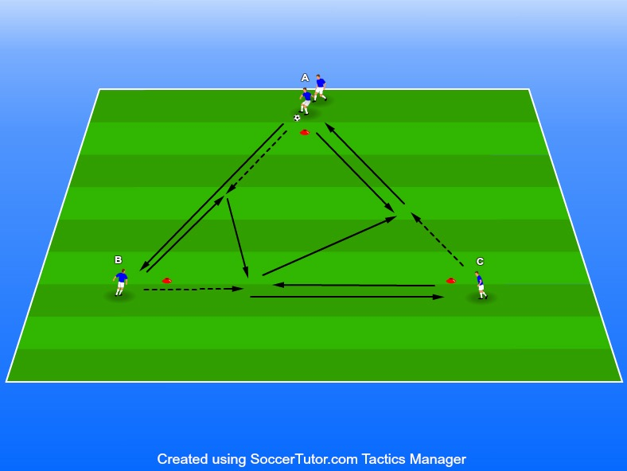

Passningsteknik, timing samt medtagning av boll
4 spelare
1 boll
3 koner
Avstånd mellan koner 1. Det fungerar lite som övningen “Kvadratpass 1 & 2”
Det som däremot ändras i denna är att spelarna lär sig ta med bollen i andra vinklar samt passa i vinklar som borde vara mer naturligt på match.
Denna variation av ajax trianglar kräver mycket timing annars blir det att passnings avstånden ofta blir för nära.
Vi vill inte att de ska lämna över bollen till varandra utan det ska ske en passning.
Som tränare kan ni även nivåanpassa denna övning. När man introducerar den först på träning kanske man bara ska passa runt som i “kvadratpass 1”. Sedan utvecklas den till väggspels variationen som ni ser nedan. Testa såklart båda hållen.
Viktigt att spelare alltid tar med bollen med bortre foten oavsett håll. Detta pga att spelarna ska lära sig ta med bollen i fart och inte döda den. Om vi tar emot bollen med bortre foten går det mycket snabbare att få med den framåt i farten.